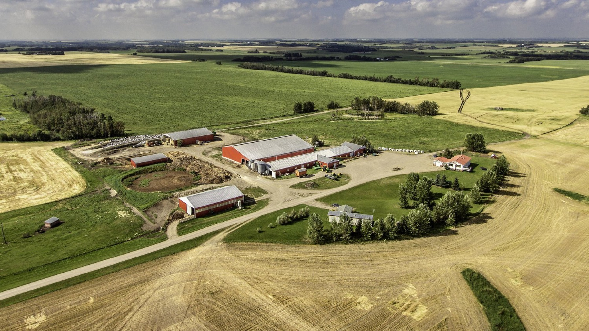
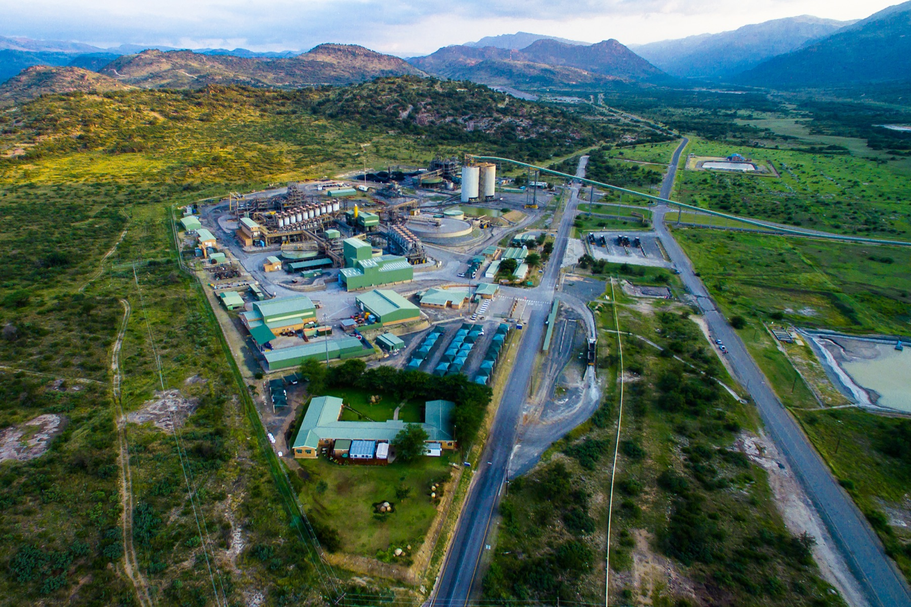

Core IP
Wi-Fi HaLow SoC
Our Wi-Fi HaLow chip integrates the digital baseband and RF front-end. It is the core intellectual property of the company and the focus of our engineering.
IEEE 802.11ah · Sub-1 GHz · Born at the University of Cape Town
Long-range, low-power and secure IoT connectivity for harsh and remote environments. We connect sensors, cameras and equipment across farms, mines and utility networks from a single access point.
The connectivity gap
On farms, mines and industrial sites, conventional Wi-Fi fades a short distance from buildings. Sensors drop out across open fields, and operations stay manual and reactive. Long-range protocols like LoRa reach further, but they carry too little data for cameras, voice or video.
Wi-Fi HaLow fills that gap. It runs at 900 MHz on narrow channels, so its signal travels about a kilometre and passes through walls and obstacles. It still carries real Wi-Fi throughput.

Technology
Lower frequencies travel further and penetrate better. Narrower bands concentrate energy and extend range. Together they give sub-1 GHz Wi-Fi about a kilometre of reach, compared with tens of metres for 2.4 GHz and 5 GHz Wi-Fi.
About 1 km per link at sub-1 GHz, and further with line of sight.
Enough throughput for cameras, voice and video, not just telemetry.
Passes through walls, concrete and other obstacles.
Built for battery-powered sensors that run for years.
More than 8,000 connected devices on one access point.
Robust against noise and changing conditions.
WPA3 and enhanced Wi-Fi encryption.
Runs alongside existing Wi-Fi at lower setup and upkeep cost.
IEEE 802.11ah, certified by the Wi-Fi Alliance.
Products
We don’t sell silicon alone. Our portfolio covers every layer OEMs, integrators and consumers need to adopt Wi-Fi HaLow.
Core IP
Our Wi-Fi HaLow chip integrates the digital baseband and RF front-end. It is the core intellectual property of the company and the focus of our engineering.
For OEMs
A pre-certified radio module for manufacturers that don’t run their own RF design. It takes them from design to certified product faster.
For developers
A developer board and SDK for prototyping HaLow products and winning designs before volume silicon arrives.
For consumers
A long-range Wi-Fi HaLow router for homes, farms and small sites. It is our consumer brand.
Ecosystem
Shared IP, a certification lab, a developer portal and over-the-air firmware support that sit behind every product we ship.
Applications
Soil, weather, irrigation and livestock sensors and cameras across the whole farm, not just near the buildings.
Links that pass through rock and concrete for safety monitoring, equipment telemetry and voice underground.

Smart metering, substations and industrial IoT, with thousands of devices on a single secure network.
Progress
Our technology comes from two funded research phases at the University of Cape Town’s Department of Electrical Engineering. The next step is a manufacturable, ASIC-ready chip.
A Wi-Fi HaLow (802.11ah) digital baseband, built and verified as an FPGA System-on-Chip prototype.
Full transceiver architecture covering mixers, PLLs, LNA/PA and ADC/DAC interfaces. Includes transistor-level design, pre-layout simulation and DRC/LVS verification against foundry rules.
One-way Wi-Fi HaLow communication demonstrated on our own design.
A demo across three rugby pitches at UCT tested speed, range, latency, reliability, permeability and security using text, speech and video. See the demo →
Converting the FPGA design to synthesisable, timing-closed RTL, followed by mixed-signal integration and top-level verification.
First silicon, then ICASA type approval and Wi-Fi Alliance certification. Commercial launch follows in South Africa, then Europe and North America.
A formal stage gate closes each phase. The gates are RTL freeze, first-silicon bring-up, certification and yield, and each must be cleared before the next phase begins.
Field demo · UCT Green Mile
The team took the Wi-Fi HaLow prototype onto the Green Mile, three rugby pitches on UCT’s campus. They set up transmitter and receiver stations running on portable power and sent text, speech and video across the link.
Illustrative layout. Not to scale.
Live speech received
Payloads tested: text, speech and video. We will publish the full results once they are compiled.
Market
Wi-Fi HaLow silicon reached mass production in 2025, and adoption is moving from pilots to volume. The first reference designs are being set now, and we are entering as an African full-stack challenger.
Our home market. ICASA gives the fastest route to certification, and smart metering, precision agriculture and mining are direct fits.
A leading market for industrial IoT and smart cities. Wi-Fi Alliance certification carries into the EU.
The largest market, entered once references and revenue are established.
Market figures come from third-party research, including QY Research, IoT Analytics and Mordor Intelligence.
Team
Our founding team combines expertise in semiconductors, embedded systems and software-defined radio, with commercialisation support from the University of Cape Town. Select anyone to see their full profile.
CTO & Lead Principal Investigator
Simon is an Associate Professor in the Department of Electrical Engineering at the University of Cape Town. He leads Sakon’s technology programme.
He was principal investigator on both UCT research phases behind the company. Those phases produced the Wi-Fi HaLow digital baseband, the FPGA System-on-Chip prototype and the RF front-end design.
CTO & Lead Principal Investigator
Simon is an Associate Professor in the Department of Electrical Engineering at the University of Cape Town. He leads Sakon’s technology programme.
He was principal investigator on both UCT research phases behind the company. Those phases produced the Wi-Fi HaLow digital baseband, the FPGA System-on-Chip prototype and the RF front-end design.
Co-Founder · Technical R&D Lead
Dean is a co-founder and engineer at Sakon Semiconductors and one of the leads of its technical research and development.
He is part of the core engineering team that took the Wi-Fi HaLow design from an FPGA prototype towards an ASIC-ready chip.
Co-Founder · Technical R&D Lead
Kudzayi is a co-founder and engineer at Sakon Semiconductors and one of the leads of its technical research and development.
He is part of the core engineering team that took the Wi-Fi HaLow design from an FPGA prototype towards an ASIC-ready chip.
Co-Founder · Project & Operations Lead
Kai is a co-founder and engineer at Sakon Semiconductors, where he leads project delivery and operations.
He handles planning, milestone tracking and reporting across the engineering programme, alongside hands-on engineering work.
Engineer
Vincent is an engineer on Sakon’s core technical team and works on the development of the Wi-Fi HaLow system.
Commercialisation Director
Niall is Commercialisation Director of Sakon Semiconductors. He is also CEO of Rorschach Innovation, a specialist private equity firm.
At Sakon he leads commercialisation, fundraising and R&D management, taking the technology from the University of Cape Town to market.
Developed with
Get in touch
We’re looking for OEM design partners, pilot customers in agriculture, mining and utilities, and investors who want to back African deep tech.